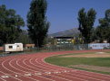
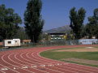

Nossa missão: Poporcionar melhores oportunidades de desenvolvimento profissional através de um inovador programa de capacitação na área linguística, contribuindo assim para valorização pessoal social e profissional do ser humano.
Valores
- • Conduta ética - Agimos com profissionalismo, integridade e respeito pelo ser humano e a natureza.
- • Serviço público - Concentramos todos os esforços com vista à satisfação do cliente, apostando em um ensino de qualidade.
- • Tolerância - Atuamos e promovemos o respeito pelas instituições, à diversidade de opiniões e a outras etnias e culturas.
- • Inovação – Zelamos e promovemos de forma contínua e sistemática as condições necessárias para criar e melhorar os processos de trabalho no na escola.
- • Liderança - Atuamos com iniciativa e responsabilidade no desenvolvimento de todas as nossas atividades bem como na solução de problemas.
- • Trabalho em equipe - Incentivamos a participação de toda a equipe para alcançar um objetivo comum, compartilhando informações e conhecimentos.
- • Cooperação - Incentivamos a participação em atividades que favoreçam o intercâmbio, a cooperação social e o desenvolvimento de experiências mútuas nas esferas autônomas, nacional e internacional.
- • Novas tecnologias - - Promovemos o uso de novas tecnologias, equipando a escola com equipamentos modernizando nossa infraestrutura.
- • Respeito ao meio ambiente - Estamos comprometidos com a conservação
Document meio ambiente e com o desenvolvimento sustentável.
Nossa visão: A Brisk idiomas tem como meta tornar-se referência em capacitação profissional no que diz respeito ao ensino de idiomas. Também ser reconhecida como uma marca confiável pelos resultados oferecidos á comunidade de pessoas que têm como objetivo a construção de um mundo melhor.